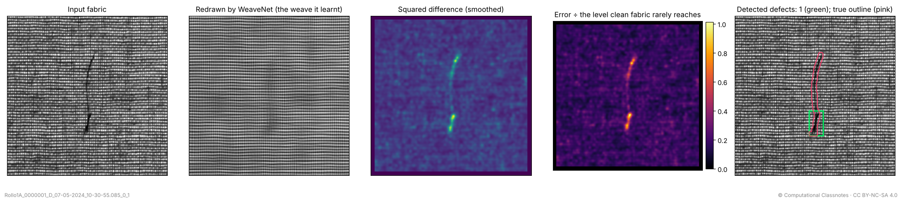
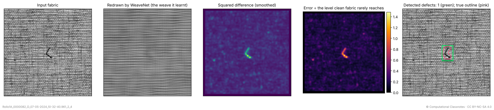
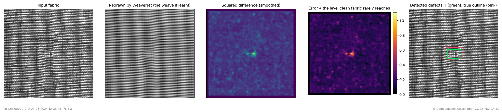
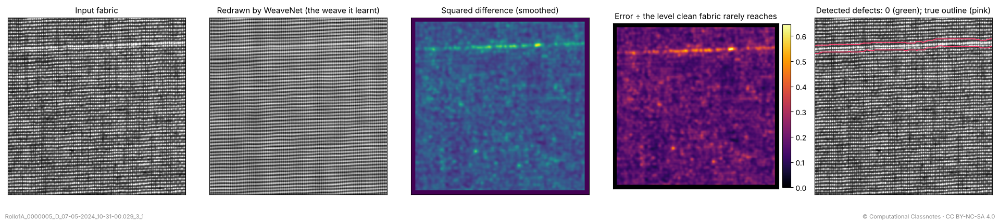
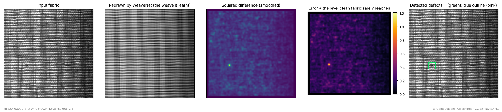
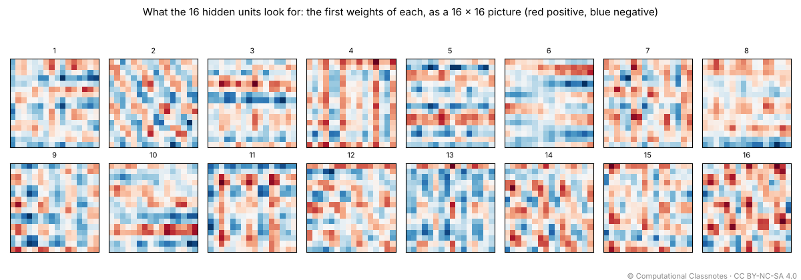
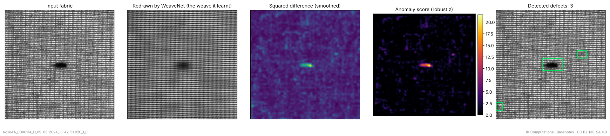
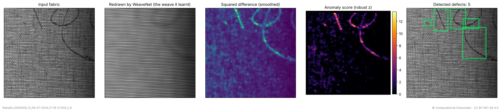

Work in progress
Paused on 25 November 2026. Next steps under discussion: a threshold for each fabric, a convolutional version, and a vote with the three classical methods.
Structure
16 × 16 patches of the image (256 numbers) → 16 hidden units (Tanh) → 256 numbers redrawn (linear), trained on its own patches with half the mean squared error.
Training
The loss (half the mean squared error plus the weight penalty) after each of 10 epochs.
Results
| Training patches (16 × 16, clean only) | 188940 |
| Clean images for calibration | 400 |
| Loss, first and last epoch | 43.1, 33.5 |
| Gradient check (linear output), largest difference | 2.68e-11 |
| Defective test patches found | 182 of 687 |
| Defective test patches found, share | 0.265 |
| Clean test patches with a false alarm | 21 of 994 |
| Clean test patches with a false alarm, share | 0.021 |
| Patch-level AUROC (largest error) | 0.792 |
| Pixel-level AUROC | 0.717 |
| Box overlap with the masks (mean IoU, defective patches) | 0.117 |
| Numbers in the net | 8464 |
RAW-FABRID: a defect found (the pink line is the dataset's own outline)

RAW-FABRID: two defects found in one patch

RAW-FABRID: a defect at the edge of a patch

RAW-FABRID: a defect missed. The error map shows the line plainly, but it stays below the level that clean fabric reaches

RAW-FABRID: a false alarm on clean fabric, a single bright speck

RAW-FABRID: what the 16 hidden units look for, across seven different fabrics

First run (Fabric Anomaly Dataset 2): loose threads

First run: a hole

First run: loops of loose thread

First run: the 16 hidden units, mostly the rows of the weft

Aim
The classical fabric trials find defects in three independent ways (a Gabor filter bank, texture codes with nearest neighbours, and removing the weave with an FFT notch filter) and box the areas where they agree. WeaveNet is the learnt counterpart of the third: instead of removing the weave's frequencies by hand, a small net learns the weave and redraws each patch of fabric as clean weave. What it cannot redraw is the defect.
Design
An autoencoder: each 16 × 16 patch (256 numbers) is squeezed through 16 hidden units (Tanh) and redrawn (256 numbers, linear), with half the mean squared error as the loss. The squeeze is the point: 16 units are enough for the regular weave but too few for every flaw. It is trained with our own code (forward pass, backpropagation, Adam), with a gradient check against finite differences. To score an image, every patch is redrawn and put back (overlaps averaged), and the smoothed squared difference is the error map. Defects are boxed by hysteresis: a box starts where the error is very high and grows over the pixels around it where it is still clearly high.
Run 1: Fabric Anomaly Dataset 2 (21 images)
Trained on 15 images that all have defects, so training is robust: after six passes the 5% of patches it redraws worst are set aside. Each image's error is turned into a robust z-score against its own median, and a box starts at z ≥ 9. It finds the defect in all 6 test images (loose threads, a knot, a hole, a vertical line), with about 3 boxes per image. Every image has a defect, so this run cannot measure false alarms: a threshold set by each image itself always finds something.
Run 2: RAW-FABRID, measured properly
RAW-FABRID (Pérez-Llorens, Albero-Albero and Silvestre-Blanes; Mendeley Data, DOI 10.17632/db6g85xsyg.1; CC BY 4.0) is raw fabric from seven rolls, cut into 256 × 256 patches, with clean patches for training and the true outline of every defect. The 21 images of Run 1 come from it. This run uses a fixed subset: every 4th clean training patch (3,549 images; 400 kept apart for calibration), every 5th clean test patch (994) and all 687 defective test patches.
Two changes make the numbers honest. Training uses clean fabric only. And the threshold is calibrated on clean fabric the net never saw: a box starts at the level of error that only 5% of the calibration images reach anywhere. Each image's error is measured against its own median, because the seven fabrics are not equally easy to redraw.
Results on the test patches:
- It finds 182 of the 687 defective patches (26.5%), with a false alarm on 21 of the 994 clean patches (2.1%).
- Ranking patches by their largest error, a defective patch comes above a clean one 79% of the time (the area under the ROC curve, 0.79); pixel by pixel, 0.72.
- Its boxes overlap the true outlines only loosely (mean intersection over union 0.12), as boxes do around thin, irregular defects.
So the plain dense autoencoder sees many defects clearly but is a modest detector on real, varied fabric. The gallery shows why: on the missed patch, the error map draws the line plainly, but its height stays below the level that some clean patches of other fabrics reach. That is the lesson, and the next step.
Next
- A convolutional version, whose filters are shared across the patch and can be set beside the Gabor bank; it should redraw the weave more faithfully and the flaws less.
- A level for each fabric, calibrated on that roll's clean patches, as a production line would.
- Voting with the three classical methods on the same RAW-FABRID patches, scored against the same outlines.
Settings of this run
| data | RAW-FABRID (CC BY 4.0), fixed subset |
| patch | 16 |
| stride (training) | 8 |
| training patches per image | 60 |
| stride (scoring) | 4 |
| hidden | 16 |
| activation | Tanh |
| output | linear, half mean squared error |
| epochs | 10 |
| batch_size | 512 |
| lr | 0.003 |
| l2 | 1e-05 |
| seed | 7 |
| calibration images (clean, not trained on) | 400 |
| smoothing of the error map (pixels) | 2.0 |
| start level (clean images reaching it) | 0.05 |
| grow level (fraction of the start level) | 0.5 |
| joining gap (pixels) | 4 |
| smallest defect (pixels) | 40 |
| border left out (pixels) | 6 |
Downloads
Built from lossofgenerality/ccn-net-lab at 5f6d7a5, training run 2026-11-24-rawfabrid-seed7 (ccnlab 0.1.0, Python 3.13.18, NumPy 2.5.3, CPU).